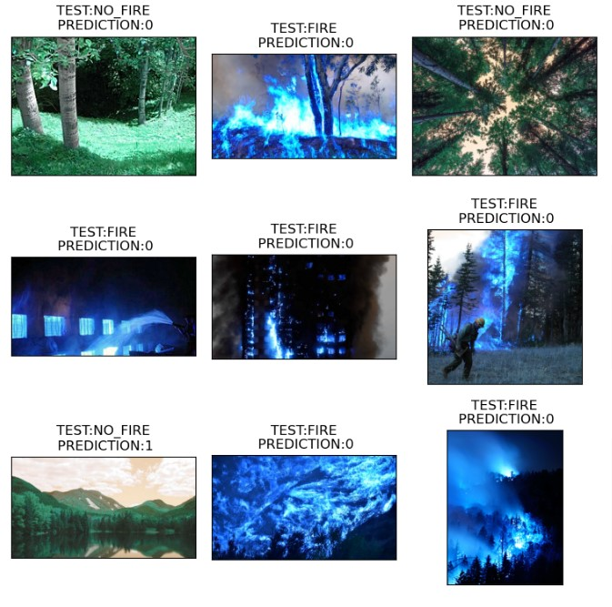
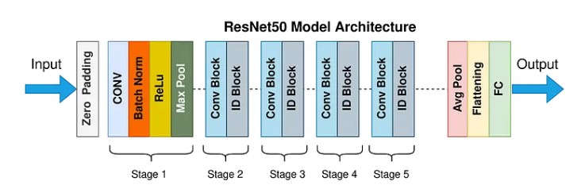

Culminating Project CMPE 452
In a culmination project for our neural networks course, our class was tasked with the application of neural networks to address real-world challenges. Within our group, we chose to utilize neural networks to forecast and detect forest fires. Each group was required to employ four distinct neural networks and then evaluate their respective outcomes. My contribution involved utilizing ResNet50, while my fellow group members worked with LeNet5, AlexNet, and a CNN.
Out of all the models we assessed, my ResNet50 demonstrated the best performance, achieving impeccable training and validation accuracies of 100%, with a testing accuracy of 99%. Before training the models, we carried out preprocessing to enhance their accuracy. This involved adjusting the images to make darker shades more distinct and transforming red tones into blue to prevent confusion with browns or changing leaf colors.
In conclusion, we delivered our project presentation to a panel consisting of Teaching Assistants and our professor. We utilized an informative PowerPoint to illustrate our findings and delve into the potential impact of our work. Looking ahead to future iterations and the project's continued development, we are keen to incorporate real-time images from satellites or cameras that are dedicated to monitoring forest fires.